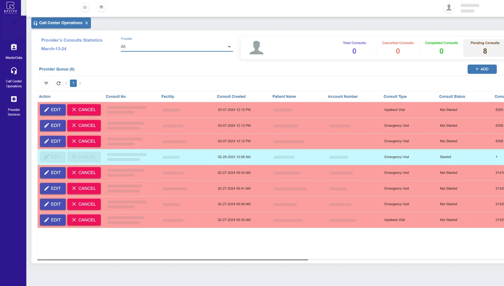
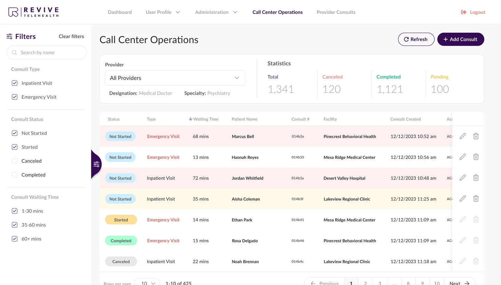

Call center queue: see who has waited too long


Before The existing CRM (2024): a queue wider than the screen, two-line consult IDs, and Edit and Cancel in every row.
After Rows turn yellow after 30 minutes and red after 60. A filter with the same three ranges; key columns stay pinned while the rest scrolls.
Why this way The color rule came from the spec; my job was to make it readable. The waiting-time filter was a text field, so I proposed three checkboxes that match the three colors.
Logic from specs States · Roles · Edge cases
- States
- Not Started rows are white under 30 minutes, yellow at 30–60 and red after 60. Other statuses stay white, and a colored tag shows the status.
- Roles
- Call center operators and admins work in the queue. Providers see only their own consults in Provider Consults.
- Edge cases
- The queue refreshes on its own and has a Refresh button. Emergency visits come first, then inpatient ones.